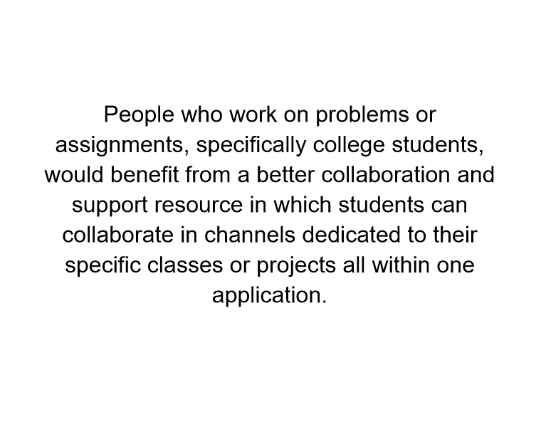
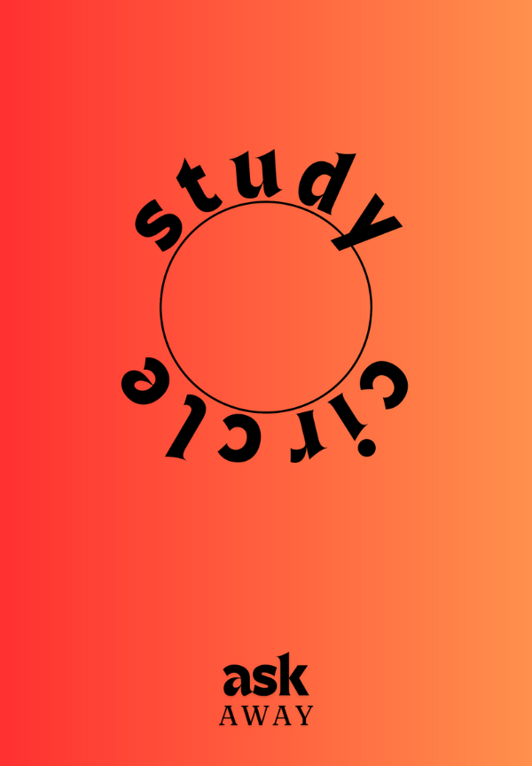
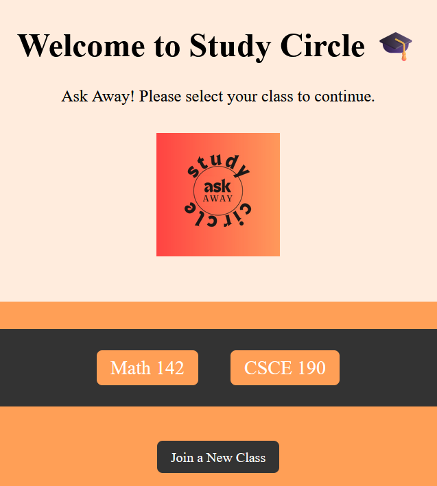

Study Circle -- Ask Away!
Problem Statement
People who work on problems or assignments, specifically college students, would benefit from a better collaboration and support resource in which students can collaborate in channels dedicated to their specific classes or projects all within one application.
Affinity Diagram

This affinity diagram describes the function, organization, and features of our app, as well as exposure methods and possible issues and their solutions.
Sketches

Multiple examples of how our application would function, including a home screen view, navigation example, and an admin example.
Storyboards

Short stories depicting the application users' need for the application and the application's benefits post-use.
Personas

Short, biographic information sheets showing examples of the users of our application.
Prototype
A video thorough walkthrough of a paper prototype of our application, Study Circle.
Website
A model website showcasing the structure and design of Study Circle.
Algorithmic Design Class Lab
Food Order Scheduler
A program that uses a manual minimum heap to process a set number of food orders, each with a given amount of time to cook and time to arrive. The program is designed to schedule orders to get the minimum average waiting time.